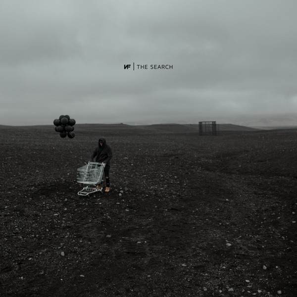
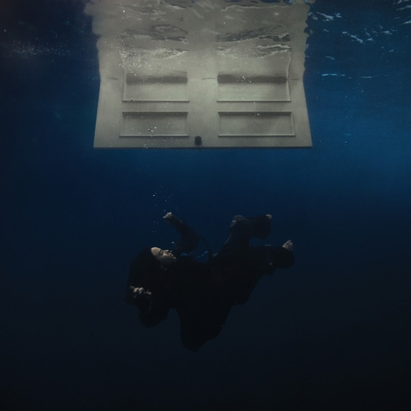
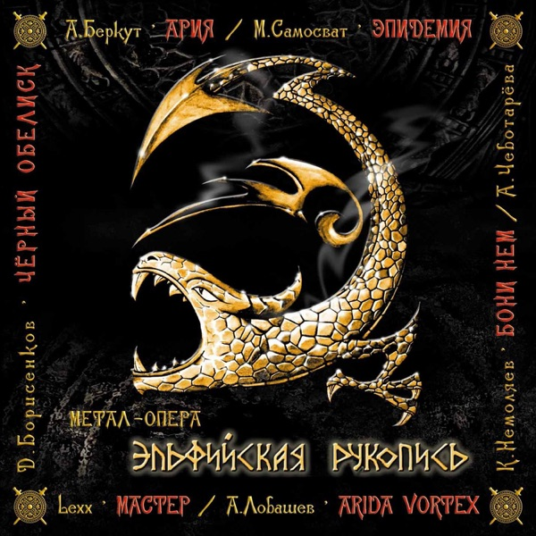
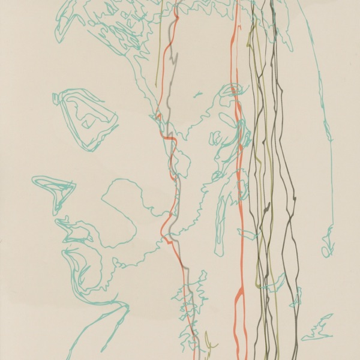
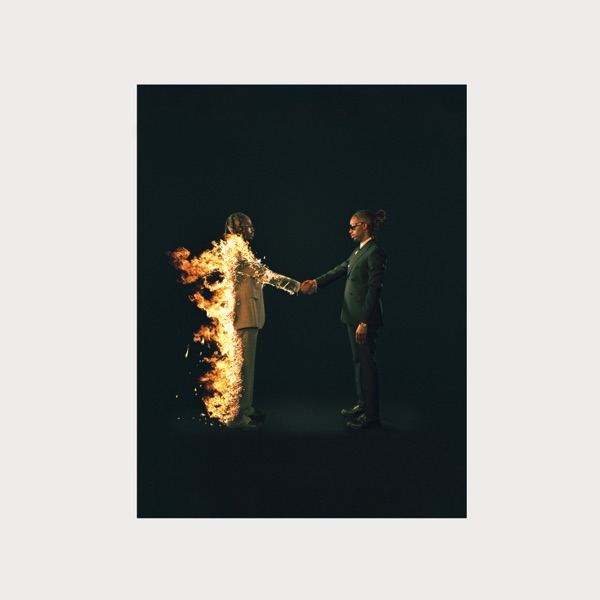

Альтернативная музыка, хип-хоп, поп и метал - альбомы любимых исполнителей и близкие по звучанию записи.
    
Год: 2018. Композиций: 14.
Trench сочетает альтернативный рок, электронную музыку и хип-хоп. Плотный бас, живые ударные и смены вокальной подачи создают напряжённое, но мелодичное звучание.
Через образ вымышленного мира группа говорит о страхах, сопротивлении и поддержке. Переход от энергичных Jumpsuit и Levitate к спокойной Leave the City делает альбом цельным музыкальным путешествием.
Год: 2019. Композиций: 20.
В The Search NF обращается к темам тревоги, внутреннего конфликта и поиска себя. Его речитатив сопровождают струнные, хоровые эффекты и тяжёлые ударные.
Кинематографичные аранжировки усиливают личную интонацию текстов. Для первого знакомства можно выбрать The Search, Leave Me Alone и Time.
Год: 2024. Композиций: 10.
В HIT ME HARD AND SOFT Billie Eilish соединяет тихий близкий вокал с резкими изменениями динамики. Акустические фрагменты переходят в электронные и танцевальные части.
Альбом интересно слушать по порядку: его настроение постепенно меняется, а отдельные песни раскрываются через неожиданные переходы. Среди характерных композиций — CHIHIRO, BIRDS OF A FEATHER и THE GREATEST.
Год: 2004. Композиций: 12.
«Эльфийская рукопись» — метал-опера группы «Эпидемия», в которой песни объединены фэнтезийной историей. Разные вокальные партии помогают различать героев и воспринимать запись как музыкальный спектакль.
Быстрые гитарные партии чередуются с лирическими эпизодами и большими припевами. В выбранное цифровое издание включён бонусный трек «Всадник из льда».
Год: 2014. Композиций: 13.
Альбом 0 проекта Low Roar сочетает мягкую электронику, акустические инструменты и хрупкий вокал. Песни развиваются неторопливо, оставляя много пространства между звуками.
Эта музыка подойдёт для спокойного прослушивания в наушниках. В качестве отправной точки можно выбрать Breathe In, Nobody Loves Me Like You и I’ll Keep Coming.
Год: 2022. Композиций: 15.
На HEROES & VILLAINS Metro Boomin объединяет приглашённых исполнителей вокруг своего продюсерского звучания. Глубокий бас, мрачные синтезаторы и выразительные переходы связывают треки между собой.
Образы героев и злодеев поддерживают кинематографическое настроение альбома. Разные голоса меняют характер песен, при этом общая звуковая атмосфера остаётся узнаваемой.
Это рекомендации по настроению и звучанию. Все 60 альбомов представлены на странице «Список музыкальных альбомов».
Выполнил: Иван Копылов. Группа: Б9124-09.03.04.